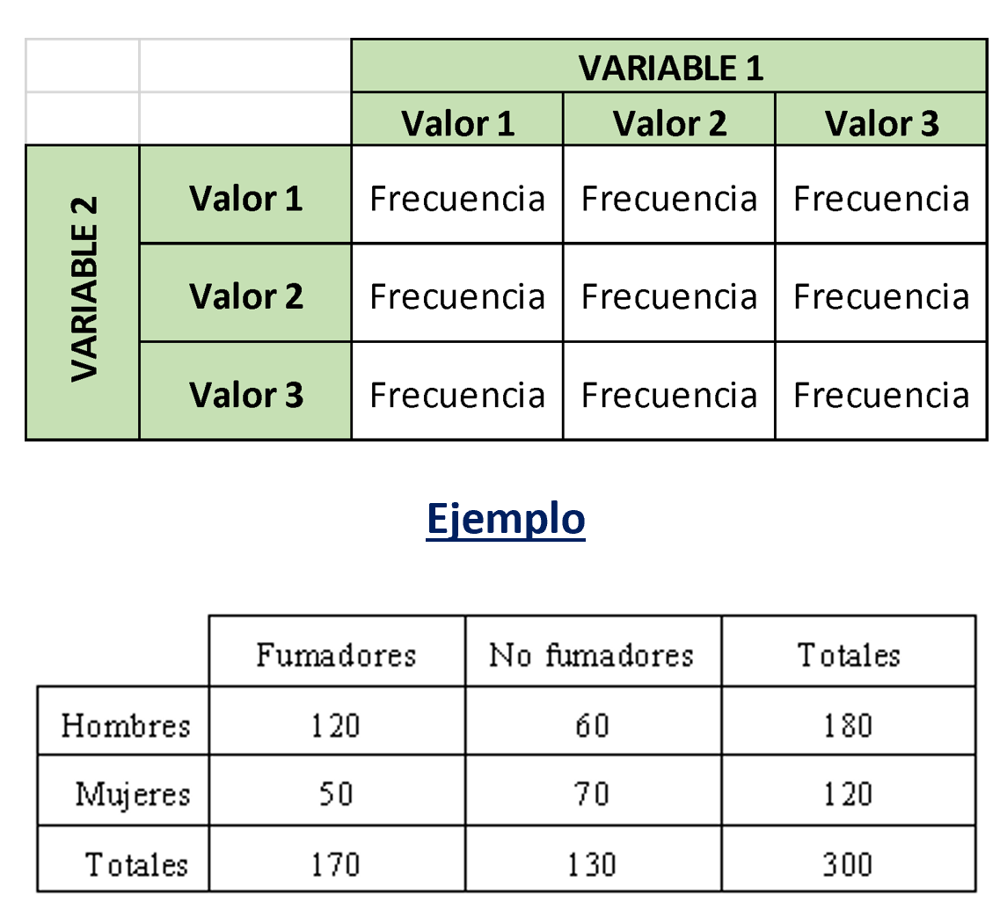
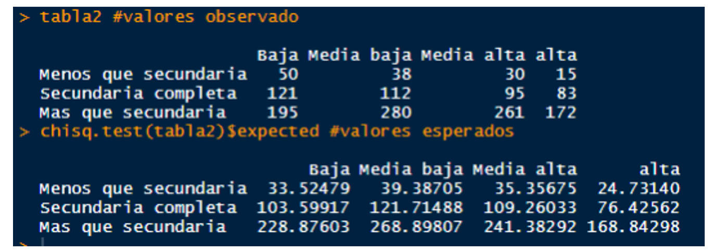

Práctica dirigida 8

FACULTAD DE CIENCIAS SOCIALES - PUCP
Curso: POL 278 - Estadística para el análisis político 1 | Semestre
2023 - 1
Tablas de contingencia, prueba Chi2
Tablas de contingencia
- Son tablas de doble entrada, en las cuales se cruza dos variables de interés.
- En las casillas de la tabla se ubica la frecuencia o el número de casos de cada cruce.
- Conceptos importantes: Frecuencias observadas y frecuencias esperadas.

Frecuencias observadas y esperadas
- Frecuencia esperada: Estas son las frecuencisa que deberían darse si las variables fueran independientes.
- Frecuencia observada: Estas son las frecuencias reales que se observa en nuestra data.
Ejemplo:

Prueba Chi2
Chi2 es una prueba para estimar el grado de asociación entre variables categóricas: “Nominal - Nominal”, “Nominal - Ordinal” y “Ordinal - Ordinal”. Esto significa que una parte de la variabilidad de una variable puede ser explicada por otra variable.
Supuestos:
Para analizar asociación se requiere que haya al menos 5 observaciones en cada celda (frecuencia esperada).
Hipótesis:
- Hipótesis nula (H0): Las variables son estadísticamente independientes.
- Hipótesis alternativa (H1): Las variables son estadísticamente dependientes.
Ejercicios
Utilizaremos data sobre elecciones presidenciales en Estados Unidos, de hace 20 años. La base de datos continene información sobre las preferencias electorales antes y después de las elecciones, así como informacion de las preferencias políticas, situación económica, religión, y participación política de los encuestados.
Cargamos la data:
library(rio)
eda=import("eda.sav")Ejercicio 1. Relación entre sexo y situación económica respecto del año pasado**
PASO 0: Revisamos la estructura de las variables que nos interesan:
Variable sexo: nominal
str(eda$sexo)Les damos el formato adecuado:
eda$sexo = factor(eda$sexo, labels = c("Hombre","Mujer"))
table(eda$sexo)Situación económica: ordinal
str(eda$su_ecopas)eda$su_ecopas= factor(eda$su_ecopas,
levels = c(1:3),
labels = c("Mejor","Igual","Peor"),
ordered = T)
table(eda$su_ecopas)PASO 1: Tabla de contigencias
Los valores observados son los valores de nuestra tabla tal como la tenemos en nuestra base
tabla1.1 = table(eda$su_ecopas, eda$sexo)
tabla1.1 #tabla simpleCreamos porcentajes por columna:
library(tidyverse)
tabla1.2 = tabla1.1 %>%
prop.table(2) %>% # porcentaje por columna
round(3)*100
tabla1.2Creamos porcentajes por fila:
tabla1.3 = tabla1.1 %>%
prop.table(1) %>% # porcentaje por fila
round(3)*100
tabla1.3PASO 2: Diagrama de barras
Opción 1
toPlot = as.data.frame(tabla1.3)
names(toPlot) = c("Categoria", "Sexo", "Porcentaje")
library(ggplot2)
ggplot(toPlot, aes(fill=Sexo, y=Porcentaje, x=Categoria)) +
geom_bar(position="dodge", stat="identity") +
labs( y = 'Porcentaje (%)', x = ' ')+
ggtitle('Situación económica en comparación con año anterior por sexo')+
theme_bw()Opción 2
ggplot(toPlot, aes(fill=Sexo, y=Porcentaje, x=Categoria)) +
geom_bar(position="fill", stat="identity") +
labs( y = 'Porcentaje (%)', x = ' ')+
ggtitle('Situación económica en comparación con año anterior por sexo')+
theme_bw()PASO 3: Prueba Chi cuadrado
- H0: Las variables son estadísticamente independientes
- HA: Las variables son estadísticamente dependientes
chisq.test(tabla1.1)De acuerdo al p–value obtenido en la prueba de hipótesis de Chi2, al ser menor de 0.05, podemos rechazar la hipótesis nula (Las variables son independientes).
Por lo tanto, concluimos existe dependencia entre las variables escogidas: sexo y situación económica actual.
EJERCICIO 2: Relación entre nivel educativo (ordinal) y nivel de confianza en la política (ordinal)
PASO 0: Revisamos la estructura de las variables que nos interesan:
Variable nivel educativo: ordinal
str(eda$educ)eda$educ = factor(eda$educ,
levels = c(1:3),
labels = c("Menos que secundaria","Secundaria completa","Mas que secundaria"),
ordered = T)
table(eda$educ)Confianza en la política: ordinal
eda$confipolR = factor(eda$confipolR,
levels = c(1:3),
labels = c("Baja","Media", "Alta"),
ordered = T)
table(eda$confipolR)PASO 1: Tabla de contigencia
Los valores observados son los valores de nuestra tabla tal como la tenemos en nuestra base
tabla2.1 = table(eda$confipolR, eda$educ)
tabla2.1Creamos porcentajes por columna:
library(tidyverse)
tabla2.2 = tabla2.1 %>%
prop.table(2) %>% # porcentaje por columna
round(3)*100
tabla2.2Creamos porcentajes por fila:
tabla2.3 = tabla2.1 %>%
prop.table(1) %>% # porcentaje por fila
round(3)*100
tabla2.3PASO 2: Diagrama de barras
Opción 1
toPlot = as.data.frame(tabla2.3)
names(toPlot) = c("Categoria", "Educacion", "Porcentaje")
library(ggplot2)
ggplot(toPlot, aes(fill=Educacion, y=Porcentaje, x=Categoria)) +
geom_bar(position="dodge", stat="identity") +
labs( y = 'Porcentaje (%)', x = ' ')+
ggtitle('Confianza en la política por nivel educativo')+
theme_bw()Opción 2
ggplot(toPlot, aes(fill=Educacion, y=Porcentaje, x=Categoria)) +
geom_bar(position="fill", stat="identity") +
labs( y = 'Porcentaje (%)', x = ' ')+
ggtitle('Confianza en la política por nivel educativo')+
theme_bw()PASO 3: Prueba Chi cuadrado
- H0: Las variables son estadísticamente independientes
- HA: Las variables son estadísticamente dependientes
chisq.test(tabla2.1)De acuerdo al p–value obtenido en la prueba de hipótesis de Chi2, al ser menor de 0.05, podemos rechazar la hipótesis nula (Las variables son independientes).
Por lo tanto, concluimos existe dependencia entre las variables escogidas: confianza en la política y nivel educativo.